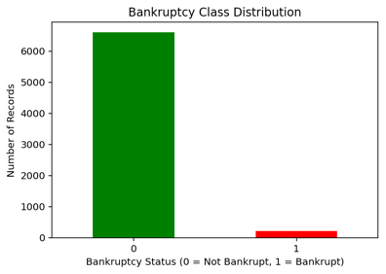

Machine Learning Project Report
1. Methodology
1.1 Overview of Approach
The aim of this project is to build a robust and interpretable classification model that can effectively predict corporate bankruptcy using traditional financial indicators. This project follows a structured machine learning pipeline: from data exploration and pre-processing, to model selection, then training, and finally evaluation. Some key challenges addressed include high dimensionality, significant class imbalance, and the need for model transparency—especially when considering the critical implications of bankruptcy misclassification.
Careful attention was given to choosing the right models for handling imbalanced binary classification, addressing differences in feature scales, and using performance metrics beyond accuracy to better evaluate how well the models could predict outcomes.
1.2 Dataset Description
The dataset was sourced from Kaggle; it consists of 6,819 company records with 95 financial attributes and a clear binary target variable, “Bankrupt?”, which denotes whether a company had declared bankruptcy (1) or not (0). All features were continuous and complete, eliminating the need for missing value imputation.
However, there was a challenge of extreme class imbalance: only 3.2% of instances represented bankrupt companies (220 out of 6,819). This imbalance is common in financial datasets and required targeted techniques to prevent models from becoming biased toward predicting the majority class.
1.3 Exploratory Analysis and Feature Assessment
Exploratory data analysis (EDA) was conducted to understand feature behavior, detect outliers, and identify relationships with the target variable. Visualizations of class distributions confirmed the imbalance, while correlation analysis highlighted features with strong discriminatory potential.
Financial metrics such as “Debt Ratio %,” “Current Liability to Assets,” and “Borrowing Dependency” were positively correlated with bankruptcy, indicating financial stress. On the other hand, profitability features like “ROA (A),” “Net Worth/Assets,” and “Net Income to Total Assets” were negatively correlated with bankruptcy.
These findings informed both model design and interpretation, highlighting variables with strong predictive value.
1.4 Data Pre-processing and Feature Scaling
Feature scaling was implemented using StandardScaler, which standardizes features to zero mean and unit variance. This step is crucial for algorithms sensitive to feature magnitudes, such as logistic regression, ensuring fair weight distribution across predictors.
Scaling was applied only after the train-test split, with the scaler fitted exclusively on the training data. This preserves the integrity of the test set and prevents data leakage.
1.5 Class Imbalance Correction with SMOTE
To address the severe class imbalance, the Synthetic Minority Over-sampling Technique (SMOTE) was introduced to the training set. SMOTE works by generating synthetic examples of the minority class by interpolating between existing observations (Chawla et al., 2002). This ensures a balanced class distribution without simply duplicating data.
Oversampling was strictly limited to the training set, preserving the original class proportions in the test set and ensuring proper generalization.
1.6 Model Selection and Justification
Following pre-processing, three models were chosen: Logistic Regression, Random Forest, and XGBoost. These were selected for their interpretability and their suitability for imbalanced binary classification, offering a balance between simplicity, robustness, and interpretability.
- Logistic Regression: Chosen for its linear decision boundary and interpretability. It was enhanced to handle class imbalance by setting
class_weight='balanced'. - Random Forest (Breiman, 2001): Selected for its robustness and ability to handle non-linear interactions among features. Feature bagging in Random Forest also reduces overfitting and offers interpretability through feature importance scores.
- XGBoost (Chen & Guestrin, 2016): Chosen for its scalability and high performance on structured data, especially when dealing with imbalanced datasets.
All models were trained using the balanced dataset (post-SMOTE) and evaluated beyond just accuracy—metrics like recall, F1-score, and ROC AUC were used to capture the ability to correctly identify bankrupt companies.
1.7 Model Training and Hyperparameter Tuning
Initially, each model was trained with default hyperparameters to establish baseline performance. Then, hyperparameter tuning was performed, particularly for Random Forest, to optimize parameters such as tree depth, number of estimators, and minimum samples per split.
GridSearchCV with 5-fold cross validation was used to systematically search parameter combinations, focusing on maximizing the ROC AUC score. For instance:
n_estimators: [100, 200, 300]max_depth: [None, 10, 20, 30]min_samples_split: [2, 5, 10]
Logistic Regression and XGBoost were adjusted manually (e.g., max_iter=1000 for Logistic Regression to ensure convergence and eval_metric='logloss' for XGBoost). This training approach ensured all models were exposed to the same balanced data and fairly evaluated.
1.8 Evaluation Metrics and Thresholding
Multiple evaluation metrics—accuracy, precision, recall, F1-score, and ROC AUC—were used to fully capture performance. Considering the real-world costs of missing bankruptcies, greater emphasis was placed on recall and ROC AUC. Some experiments involved lowering the classification threshold (e.g., to 0.3 in Logistic Regression) to increase recall, acknowledging that in cost-sensitive situations, false negatives can be more damaging than false positives.
Confusion matrices and precision-recall curves were also used to analyze model misclassification patterns, especially important in highly imbalanced datasets (Saito and Rehmsmeier, 2015).
2. Results
2.1 Overview of Model Performance
The models were evaluated on the test set. Key metrics like accuracy and ROC AUC are summarized below:
| Model | Accuracy | ROC AUC |
|---|---|---|
| Logistic Regression | 88.34% | 0.9152 |
| Random Forest | 96.04% | 0.9415 |
| XGBoost | 96.33% | 0.9443 |
| Tuned Random Forest | 95.97% | 0.9445 |
While XGBoost and the Tuned Random Forest produced the highest ROC AUC scores, the Random Forest also performed exceptionally well. Logistic Regression achieved a respectable ROC AUC of 0.915 despite being a simpler baseline model.
2.2 Threshold Adjustment and Class-Specific Performance
Logistic Regression was further analyzed using a custom classification threshold of 0.3 instead of the default 0.5, significantly increasing recall at the cost of some precision:
| Metric | Default Threshold (0.5) | Custom Threshold (0.3) |
|---|---|---|
| Recall (Class=1) | 0.80 | 0.86 |
| Precision (Class=1) | 0.19 | 0.14 |
| F1-score (Class=1) | 0.31 | 0.23 |
This reflects a deliberate trade-off where false negatives are considered more costly than false positives.
2.3 Visual Evaluation
Multiple visualizations were used to gain deeper insights:
- Class Imbalance and Feature Distribution: Bar charts, boxplots, and histograms highlighted the minority class and pivotal features (e.g., “Operating Profit Rate”).
- Confusion Matrix Heatmaps (Figure 4): Showed relatively few false negatives for the Tuned Random Forest—critical for real-world bankruptcy detection.
- ROC Curves (Figure 5): Indicated the Tuned Random Forest achieved an AUC of 0.94, confirming strong class discrimination.
- Precision-Recall Curves (Figure 6): Demonstrated the trade-off between identifying bankruptcies (recall) and maintaining precision, reinforcing the model’s cost-sensitive application.
- Feature Importance (Figure 7): Showed top financial stress indicators like “Debt Ratio %” and “Net Income to Total Assets” had high predictive power.
3. Discussion
3.1 Comparative Analysis of Models
XGBoost and the Tuned Random Forest yielded the strongest metrics, with ROC AUCs above 0.94. Logistic Regression still proved useful as a simpler baseline, especially when a custom threshold was applied to improve recall for bankruptcies.
Random Forest and XGBoost both leveraged ensemble learning to handle complex, non-linear relationships. The Tuned Random Forest struck an excellent balance between strong performance and interpretability, revealed through feature importance.
3.2 Real-World Suitability
In high-stakes financial scenarios, interpretability is crucial. Although XGBoost offered marginally higher accuracy, the Random Forest provided feature importance scores, aiding transparency and stakeholder trust. For cost-sensitive contexts where missing a bankruptcy is a severe error, having insight into why a certain prediction was made is invaluable.
3.3 Limitations and Future Considerations
- Only the Random Forest underwent exhaustive grid search tuning. Further tuning of Logistic Regression and XGBoost could yield performance gains.
- SMOTE helped balance the training set, but the real-world class imbalance remains a challenge in deployment, potentially increasing false positives.
- Future work might explore alternative sampling techniques, cost-sensitive loss functions, or advanced interpretability methods like SHAP to gain deeper insights.
Conclusion
This project demonstrates a comprehensive machine learning pipeline for corporate bankruptcy prediction. Careful data preprocessing, model selection, and SMOTE-based class balancing improved predictive performance. Evaluations that focused on recall and ROC AUC underscored the real-world cost-sensitive nature of missed bankruptcies. Ultimately, ensemble models like Random Forest and XGBoost shone in terms of raw performance, while the more interpretable Random Forest offered enhanced transparency—vital for financial applications. Future iterations could refine hyperparameters across all models and leverage advanced interpretability techniques to further support high-stakes decision-making.
Bibliography
- Breiman, L. (2001). Random Forests. Machine Learning, 45(1), pp.5–32.
- Chawla, N.V., Bowyer, K.W., Hall, L.O., & Kegelmeyer, W.P. (2002). SMOTE: Synthetic Minority Over-sampling Technique. Journal of Artificial Intelligence Research, 16, pp.321–357.
- Chen, T., & Guestrin, C. (2016). XGBoost: A Scalable Tree Boosting System. Proceedings of the 22nd ACM SIGKDD International Conference on Knowledge Discovery and Data Mining (KDD ’16). pp.785–794. ACM.
- Saito, T., & Rehmsmeier, M. (2015). The precision-recall plot is more informative than the ROC plot when evaluating binary classifiers on imbalanced datasets. PLOS ONE, 10(3), e0118432.
- Scikit-learn. (2023). Classification Metrics. [online] Available at: https://scikit-learn.org/stable/modules/model_evaluation.html [Accessed 13 Apr. 2025].
Appendix
Figure 1: Class Distribution
This figure shows the distribution of bankrupt versus non-bankrupt companies, highlighting the extreme class imbalance.

Figure 2: Boxplot of Operating Profit Rate
This boxplot compares the operating profit rates between bankrupt and non-bankrupt firms.
Figure 3: Histogram with KDE of Operating Profit Rate
The histogram with kernel density estimate (KDE) illustrates how the operating profit rate distributions differ by bankruptcy status.
Figure 4: Confusion Matrix Heatmap for Tuned Random Forest
This heatmap provides insight into the classification outcomes by showing the true/false positives and negatives on the test set.
Figure 5: ROC Curve for Tuned Random Forest
The ROC curve demonstrates the trade-off between true positive rate and false positive rate for varying classification thresholds, with an AUC of 0.94.
Figure 6: Precision-Recall Curve for Tuned Random Forest
This curve highlights the balance between precision and recall, critical in cost-sensitive prediction scenarios.
Figure 7: Feature Importance in Tuned Random Forest
A bar chart ranking the top 10 most important features as determined by the model, revealing key financial indicators linked to bankruptcy prediction.